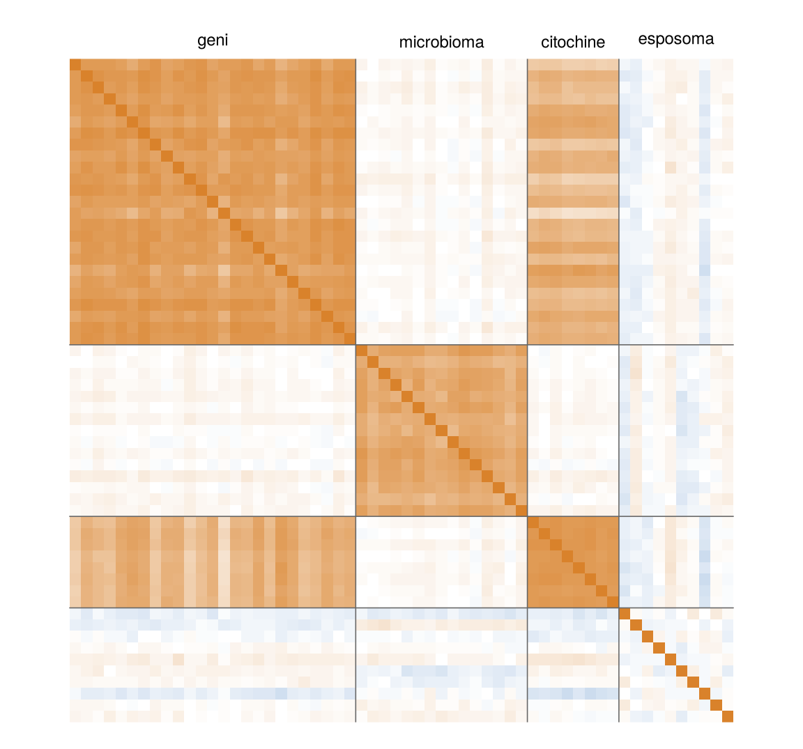
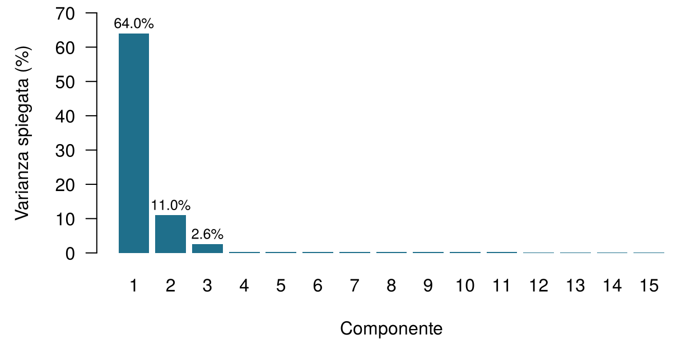
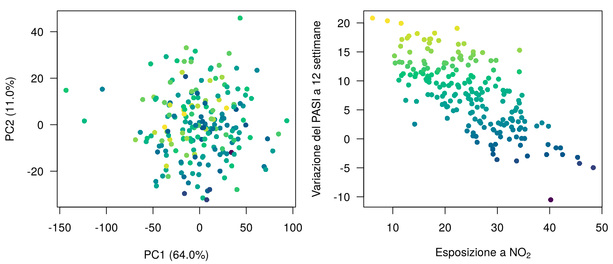
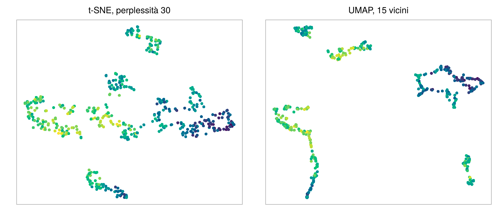
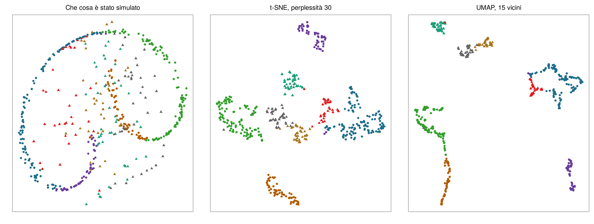

![A sinistra: una dispersione diffusa di punti, con il PASI basale sull'asse orizzontale e l'NO2 sull'asse verticale, colorati dallo scuro al giallo secondo la variazione del PASI, senza alcun raggruppamento visibile. A destra: sei assi verticali etichettati PASI, NO2, PM10, gene 1, gene 2 ed esito, attraversati da linee grigie e da quaranta linee evidenziate; le linee evidenziate stanno in alto sull'asse dell'esito e tendono a stare in basso sull'asse dell'NO2, e le linee del gene 1 e del gene 2 corrono quasi parallele.](ch10.it_files/figure-html/fig-ch10-views-1.png)
10 Dati ad alta dimensionalità e riduzione della dimensionalità
Quattro domande per scaldarti. Prova a indovinare; il capitolo le spiega una per una.
| Domanda | La tua risposta |
|---|---|
| Una tabella ha 200 pazienti (righe) e 1.850 misure (colonne). In quante dimensioni vive ciascun paziente? | |
| Due pazienti si trovano nei punti (1, 1) e (4, 5) di un grafico. Qual è la distanza in linea retta tra loro? | |
| La creatinina viene registrata in µmol/L anziché in mg/dL (ogni valore moltiplicato per 88,4). La distanza in linea retta tra due pazienti descritti da creatinina ed età… | |
| Un metodo che sostituisce molte misure con poche nuove variabili di sintesi, senza guardare alcun esito, è un esempio di… |
Come usare questo capitolo
Inizi da qui?
Questo capitolo prende in prestito alcune idee dai capitoli precedenti. In una riga ciascuna:
- Istanze e variabili. Ogni riga di un dataset è un’istanza (un paziente), ogni colonna una variabile; ci sono \(n\) istanze e \(p\) variabili, e \(\mathbf{x}_i\) raccoglie le variabili dell’istanza \(i\) (Definizione 1.7).
- L’apprendimento non supervisionato cerca una struttura nelle variabili senza usare un esito (Sezione 1.6.2). Tutto in questo capitolo è non supervisionato; gli esiti compaiono solo come colori sovrapposti ai risultati, a cose fatte.
- Dal Capitolo 3. Il metodo dei \(k\) vicini più prossimi fa previsioni a partire dai pazienti passati più simili, dove “simile” significa vicino in distanza euclidea su variabili standardizzate (ogni variabile meno la sua media, divisa per la sua deviazione standard). Medie e deviazioni standard usate in una pipeline predittiva devono provenire solo dai dati di addestramento, altrimenti la standardizzazione provoca leakage.
- Dal Capitolo 4. La collinearità (predittori fortemente legati tra loro) rende instabili i coefficienti di regressione; ridge e lasso tengono a bada i modelli con più predittori che pazienti. In ONCO-1 i geni 08, 14 e 19 sono copie dell’esito affette da leakage e restano esclusi, a meno che non stiamo studiando proprio il leakage.
- Dal Capitolo 2. L’entropia misura l’incertezza (la sorpresa), in bit.
| Esempio | Chi o che cosa | Esito | Volti che incontrerai |
|---|---|---|---|
| 1 Terapia intensiva del Reparto 7 | 1.250 pazienti di terapia intensiva in 4 ospedali | variazione della creatinina in 48 h (danno renale acuto se ≥ 0,3 mg/dL) | Aoife (71 anni, sepsi, rischio borderline), Tomás (54 anni, rischio basso), Priya (38 anni, rischio alto); la dott.ssa Emma Walsh; Seán, il farmacista |
| 2 Studio ONCO-1 | 1.000 pazienti randomizzati a ricevere o meno la chemioterapia | riduzione del tumore (%) | i pazienti #0042 e #0917 |
| 3 HomeBeat | 500 persone che indossano uno smartwatch a casa | punteggio di stress, evento di peggioramento | Lena |
| 4 CellWorks | 420 lotti di produzione di una terapia cellulare | punteggio di potenza | il lotto CW-118 |
Tutti e quattro i dataset sono simulati e si possono scaricare dall’appendice sui dati. La presentazione completa si trova in Sezione 1.1.
Questo capitolo segue i pazienti in spazi con migliaia di assi e li riporta su una pagina. Comprende dieci sezioni e un Laboratorio, otto verifiche rapide, tre widget “Prova tu”, una sfida di abbinamento e tre missioni di programmazione in R e Python. Calcola circa 100 minuti. Non ti serve algebra lineare oltre all’idea di somma pesata; ogni formula è seguita da una frase che dice la stessa cosa a parole.
La notazione in sintesi (solo per consultazione)
| Simbolo | Significato | Sezione |
|---|---|---|
| \(p\), \(n\) | numero di variabili (dimensioni), numero di istanze | Sezione 10.1 |
| \(d(\mathbf{x}_i, \mathbf{x}_{i'})\) | distanza tra le istanze \(i\) e \(i'\) | Sezione 10.2 |
| \(\mathbf{S}\) | matrice di covarianza delle variabili (matrice di correlazione dopo la standardizzazione) | Sezione 10.2 |
| \(\mathbf{u}_m\) | direzione (vettore unitario di coefficienti) della componente principale \(m\) | Sezione 10.5 |
| \(z_{im}\), \(\mathbf{z}_i\) | punteggio dell’istanza \(i\) sulla componente \(m\); la sua rappresentazione a bassa dimensionalità | Sezione 10.5 |
| \(s_m^2\) | varianza dei punteggi sulla componente \(m\) (un autovalore di \(\mathbf{S}\)) | Sezione 10.5 |
| \(q\) | numero di componenti o di dimensioni della mappa conservate | Sezione 10.5 |
| Perp | perplessità di t-SNE, il numero effettivo di vicini | Sezione 10.7 |
L’elenco completo si trova nella pagina della notazione.
10.1 Che cos’è una dimensione?
Comincia dalla coorte di dermatologia, che chiamiamo Dermato-ATT. La psoriasi è una malattia infiammatoria cronica della pelle in cui le cellule cutanee si moltiplicano troppo in fretta e il sistema immunitario, in particolare la via dell’interleuchina-17 e dell’interleuchina-23, è iperattivo; i farmaci che bloccano l’IL-17 sono tra i trattamenti più efficaci (Griffiths et al. 2021). La gravità si misura con lo Psoriasis Area and Severity Index (PASI), da 0 (pelle libera) a 72 (Fredriksson e Pettersson 1978). Prima della prima iniezione, l’unità ha registrato per ciascuno dei 200 pazienti i blocchi della Tabella 10.1; l’esito è la variazione del PASI dopo 12 settimane di trattamento. Come tutti i dataset di questo libro, la coorte è simulata: i nomi dei geni e dei microbi sono etichette, non geni reali, e guarderemo dentro il simulatore nella Sezione 10.5.4.
data/dermato.csv) conserva tutte le colonne cliniche, delle citochine e dell’esposoma, i primi 100 geni e le prime 50 variabili del microbioma.
| Blocco | Colonne | Esempi | Che cosa descrive |
|---|---|---|---|
| Clinico | 2 | PASI_baseline, DLQI |
gravità e qualità di vita al basale |
| Citochine | 18 | cytokine_1 … cytokine_18 |
proteine infiammatorie nel sangue |
| Esposoma | 30 | NO2, PM10, UV_index, temperature, humidity, expo_6 … |
ambiente in cui vive il paziente |
| Geni | 1.500 | gene_1 … gene_1500 |
espressione nella cute lesionale |
| Microbioma | 300 | ASV_1 … ASV_300 |
abbondanza dei batteri cutanei (varianti di sequenza dell’amplicone) |
| Totale | 1.850 | più Outcome_PASI12, la variazione del PASI a 12 settimane |
Ogni colonna è un asse. Un paziente descritto da due misure è un punto su un foglio di carta; da tre, un punto in una stanza. Un paziente di Dermato-ATT è un punto in uno spazio con 1.850 assi.
Definizione 10.1 (Dimensione) La dimensione di un dataset è il suo numero di variabili \(p\): ogni variabile è un asse e ogni istanza è un punto \(\mathbf{x}_i = (x_{i1}, \dots, x_{ip})\) in uno spazio a \(p\) dimensioni. Un dataset è ad alta dimensionalità quando \(p\) è grande rispetto al numero di istanze \(n\); quando \(p\) è molto più grande di \(n\) scriviamo \(p \gg n\). Dermato-ATT ha \(n = 200\) e \(p = 1\,850\); lo studio ONCO-1 completo ha 2.000 geni.
Possiamo guardare pochi assi alla volta. La Figura 10.1 (a sinistra) colloca ogni paziente in base al PASI basale e all’esposizione al biossido di azoto (NO2) e lo colora secondo la variazione del PASI a 12 settimane. Non salta all’occhio alcuno schema: i pazienti molto migliorati e quelli quasi invariati sono sparsi ovunque. Aggiungendo un terzo asse (un gene) si ottiene una nuvola che potresti ruotare sullo schermo, ed è ancora una nuvola diffusa. I dati contengono relazioni forti per costruzione, ma non si vedono attraverso due o tre coordinate.
La grafica può spingersi un po’ più in là. In un grafico a coordinate parallele (Figura 10.1, a destra) ogni variabile diventa un asse verticale e ogni paziente una linea che li attraversa tutti; fasci di linee che viaggiano insieme rivelano profili comuni (Inselberg 1985). Qui i pazienti evidenziati, quelli migliorati di più, tendono ad attraversare in basso l’asse dell’NO2: un primo indizio, che ci servirà più avanti. I grafici condizionati (pannelli trellis o lattice) disegnano lo stesso diagramma di dispersione in più pannelli, uno per ogni fascia di una terza variabile, così da mostrare come una relazione cambia da un gruppo all’altro (Cleveland 1993; Sarkar 2008). Entrambi smettono di funzionare molto prima di 1.850 variabili. Per vedere l’intera nuvola ci serve o un modo di misurare quanto distano i pazienti in tutte le dimensioni insieme, o un modo di ridurre le dimensioni a poche che contano. Questo capitolo fa entrambe le cose, in quest’ordine.
10.2 Quanto distano due pazienti? Le distanze
Ogni metodo di questo capitolo, come i \(k\) vicini più prossimi del Capitolo 3, parte dalla stessa domanda: quanto distano due pazienti?
10.2.1 La distanza euclidea, da due dimensioni a \(p\)
Su un foglio di carta, la distanza tra i pazienti A e B è la lunghezza del segmento che li unisce. Se A si trova in \((x_{A1}, x_{A2})\) e B in \((x_{B1}, x_{B2})\), Pitagora dà
\[ d(A, B) = \sqrt{(x_{B1} - x_{A1})^2 + (x_{B2} - x_{A2})^2} : \]
la differenza orizzontale al quadrato, più la differenza verticale al quadrato, e poi la radice quadrata (Figura 10.2, a sinistra). In tre dimensioni alla somma si aggiunge una terza differenza al quadrato. Niente ci impedisce di proseguire: con \(p\) variabili, la distanza euclidea tra le istanze \(i\) e \(i'\) è
\[ d(\mathbf{x}_i, \mathbf{x}_{i'}) = \sqrt{\sum_{j=1}^{p} (x_{ij} - x_{i'j})^2} , \qquad(10.1)\]
la stessa ricetta su \(p\) coordinate: una differenza al quadrato per ogni variabile, sommate, e poi la radice quadrata.
10.2.2 Altre distanze
La distanza euclidea è una scelta fra tante, e ogni scelta esprime un’idea diversa di che cosa significhi “simile” (Hastie, Tibshirani, e Friedman 2009, cap. 14).
- La distanza di Manhattan somma le differenze in valore assoluto invece di elevarle al quadrato, \(d_{\text{Man}}(\mathbf{x}_i, \mathbf{x}_{i'}) = \sum_j |x_{ij} - x_{i'j}|\): la strada che un taxi percorre su una griglia di vie (Figura 10.2, al centro). Poiché le differenze non vengono elevate al quadrato, una singola differenza grande pesa meno e, per dati casuali, il contrasto tra punti vicini e lontani si attenua più lentamente che con la distanza euclidea man mano che si aggiungono dimensioni (Aggarwal, Hinneburg, e Keim 2001).
- La distanza del coseno guarda solo la direzione dei due profili, non la loro lunghezza: \(d_{\cos}(\mathbf{x}_i, \mathbf{x}_{i'}) = 1 - \dfrac{\sum_j x_{ij}x_{i'j}}{\sqrt{\sum_j x_{ij}^2}\,\sqrt{\sum_j x_{i'j}^2}}\). La frazione è il coseno dell’angolo tra le due frecce della Figura 10.2 (a destra): vale 1 quando puntano nella stessa direzione, e allora la distanza è 0. È adatta a profili in cui contano le proporzioni e non il totale: due tamponi cutanei con la stessa miscela di batteri, uno sequenziato con una profondità doppia dell’altro, hanno distanza del coseno 0. Il Capitolo 15 usa proprio questa idea per confrontare documenti di lunghezza diversa.
- La distanza di Mahalanobis tiene conto delle correlazioni tra le variabili (Mahalanobis 1936): \(d_{\text{Mah}}(\mathbf{x}_i, \mathbf{x}_{i'}) = \sqrt{(\mathbf{x}_i - \mathbf{x}_{i'})^\top \mathbf{S}^{-1} (\mathbf{x}_i - \mathbf{x}_{i'})}\), dove \(\mathbf{S}\) è la matrice di covarianza delle variabili. Due citochine che salgono e scendono insieme (in Dermato-ATT,
cytokine_1ecytokine_2hanno una correlazione di 0,81) portano in gran parte la stessa informazione. Un paziente una deviazione standard sopra la media in entrambe non ha nulla di insolito: distanza di Mahalanobis 1,05 dal paziente medio. Un paziente una deviazione standard sopra nell’una e una sotto nell’altra ha una combinazione insolita: distanza 3,22, benché i due pazienti si trovino esattamente alla stessa distanza euclidea standardizzata (\(\sqrt 2\)) dalla media. Il problema è che \(\mathbf{S}\) va stimata e invertita, il che è impossibile quando \(p \ge n\): con 1.850 variabili e 200 pazienti la matrice non ha inversa.
Definizione 10.2 (Distanza) Una distanza \(d(\mathbf{x}_i, \mathbf{x}_{i'})\) è una regola che trasforma due vettori di variabili in un numero non negativo, zero per istanze identiche e più grande per istanze meno simili. La distanza euclidea (Equazione 10.1) somma differenze al quadrato; la distanza di Manhattan somma differenze in valore assoluto; la distanza del coseno misura l’angolo tra i profili e ne ignora la lunghezza; la distanza di Mahalanobis riscala lo spazio con l’inversa della matrice di covarianza, in modo che le variabili correlate non vengano contate due volte (Mahalanobis 1936). Scegliere una distanza significa scegliere che cosa vuol dire “simile” (Hastie, Tibshirani, e Friedman 2009, cap. 14; Kaufman e Rousseeuw 1990).
Due profili di microbioma hanno esattamente le stesse proporzioni di ogni batterio, ma il campione B è stato sequenziato con una profondità doppia rispetto al campione A, quindi ogni conteggio di B è il doppio del conteggio di A. Quale affermazione è vera?
10.2.3 Le unità contano: prima standardizza
Prendi tre pazienti ipotetici descritti dal PASI basale (punti), dall’esposizione all’NO2 (µg/m³) e da gene_1 (unità di espressione), riportati nella Tabella 10.2.
| Paziente | PASI | NO2 | gene_1 | da A (grezzi) | da B (grezzi) | da A (standardizzati) | da B (standardizzati) | |
|---|---|---|---|---|---|---|---|---|
| A | A | 10 | 20 | 0.1 | 0.0 | 35.1 | 0.00 | 4.42 |
| B | B | 12 | 55 | 0.9 | 35.1 | 0.0 | 4.42 | 0.00 |
| C | C | 18 | 45 | 0.5 | 26.3 | 11.7 | 4.02 | 2.30 |
Sulla scala grezza l’NO2 si misura in decine di unità e gene_1 in frazioni di unità, quindi l’NO2 decide quasi tutto: della distanza al quadrato tra A e C, il 91% viene dall’NO2 e solo il 9% dal PASI, anche se A e C differiscono di otto punti di PASI, un divario clinicamente grande. Dopo aver diviso ogni variabile per la sua deviazione standard nella coorte (PASI 3,1, NO2 8,1, gene_1 1,16), la quota del PASI sale al 40%. Nei pazienti non è cambiato nulla; sono cambiate solo le unità. È la lezione sulla scala del Capitolo 3, ora con molte variabili dalle unità diversissime, e vale per ogni distanza, per la PCA e per ogni mappa di questo capitolo.
Definizione 10.3 (Standardizzazione) Standardizzare una variabile significa sottrarle la media e dividerla per la deviazione standard: \(x^{*}_{ij} = (x_{ij} - \bar x_j)/s_j\). Ogni variabile standardizzata ha media 0 e deviazione standard 1, così le distanze e le componenti principali non dipendono più dalle unità di misura. In una pipeline predittiva medie e deviazioni standard si calcolano solo sui dati di addestramento (Capitolo 3); per una mappa puramente descrittiva di una coorte si calcolano sull’intera coorte.
Standardizzare è una scelta, non una legge. Dà a ogni variabile lo stesso peso, il che è giusto quando le unità sono arbitrarie (NO2 contro PASI) e può essere sbagliato quando tutte le variabili condividono la stessa unità e la loro dispersione è informativa, oppure quando molte variabili rumorose verrebbero gonfiate fino alla stessa importanza di poche variabili forti (Jolliffe 2002, cap. 2). Fai la scelta in modo consapevole e dichiarala.
Calcoli le distanze euclidee tra i pazienti di Dermato-ATT sulle cinque variabili dell’esposoma con un nome (NO2, PM10, indice UV, temperatura, umidità) senza standardizzare. Le loro deviazioni standard sono circa 8, 6, 1, 5 e 12. Quale variabile domina le distanze?
Quanto distano due pazienti di ONCO-1? I 47 geni di ONCO-1 che non sono copie dell’esito affette da leakage sono caricati come genes (una riga per paziente). Standardizza ogni gene, poi calcola la distanza euclidea tra i primi due pazienti. Completa lo spazio vuoto con la funzione che standardizza.
La funzione ha lo stesso nome dell’idea in inglese: scala (scale) le colonne.
z <- scale(genes) # standardizza ogni gene (colonna)Il metodo è l’abbreviazione di standard deviation (deviazione standard, in inglese): tre lettere.
z = (genes - genes.mean()) / genes.std() # standardizza ogni gene (colonna)Sui valori grezzi di espressione gli stessi due pazienti si trovano a una distanza diversa, perché dominano i geni con grande dispersione. Sia pandas sia R dividono per la deviazione standard calcolata con \(n-1\), quindi i due linguaggi concordano fino all’ultima cifra.
10.3 La maledizione della dimensionalità
La formula della distanza si generalizza a qualsiasi \(p\). La nostra intuizione no. La maledizione della dimensionalità, espressione coniata da Bellman (1961), raccoglie diversi modi in cui gli spazi ad alta dimensionalità si comportano diversamente da quelli a due e tre dimensioni che riusciamo a immaginare.
Definizione 10.4 (Maledizione della dimensionalità) La maledizione della dimensionalità è l’insieme dei problemi che compaiono al crescere del numero di dimensioni: i dati diventano sparsi (un numero fisso di punti copre una frazione sempre più piccola dello spazio), le distanze si concentrano (il vicino più prossimo e quello più lontano di un punto finiscono per essere quasi alla stessa distanza) e i metodi che si basano su intorni locali, come il \(k\)NN, hanno bisogno di una quantità di dati esponenzialmente maggiore per mantenere la stessa accuratezza (Bellman 1961; Hastie, Tibshirani, e Friedman 2009, sez. 2.5).
Sparsità. Supponi che i pazienti siano distribuiti uniformemente in un cubo unitario e che tu voglia un “intorno” che ne contenga il 10%. In una dimensione basta un intervallo di lunghezza 0,10. In dieci dimensioni il sottocubo deve avere spigoli di lunghezza 0,79, in cento dimensioni 0,977 (Hastie, Tibshirani, e Friedman 2009, sez. 2.5). Un “intorno” che copre quasi tutto l’intervallo di ogni variabile non è più locale: i tuoi vicini più prossimi non sono vicini.
Concentrazione. Simula 200 punti le cui coordinate sono tutte puro rumore casuale e confronta la coppia più vicina con quella più lontana (Tabella 10.3). In due dimensioni i punti della coppia più vicina quasi coincidono: la loro distanza è 0,00063 della distanza massima. In mille dimensioni la coppia più vicina dista già il 84% di quella più lontana: tutti sono più o meno alla stessa distanza da tutti (Beyer et al. 1999).
| Dimensione p | Coppia più vicina | Coppia più lontana | Rapporto più vicina / più lontana |
|---|---|---|---|
| 2 | 0.00 | 5.60 | 0.001 |
| 10 | 1.43 | 9.07 | 0.157 |
| 100 | 10.33 | 17.87 | 0.578 |
| 1000 | 40.87 | 48.54 | 0.842 |
Guarda le distanze concentrarsi. Cento pazienti simulati sono descritti da \(p\) variabili. L’istogramma mostra tutte le 4.950 distanze tra coppie, ciascuna divisa per la loro media, così che tu ne veda la dispersione e non la grandezza; il grafico in basso mostra il rapporto tra la distanza minima e quella massima per ogni \(p\). Passa da variabili che sono rumore indipendente a variabili generate da due fattori nascosti più rumore, come il blocco dei geni di Dermato-ATT. Obiettivo: con rumore indipendente, trova il più piccolo \(p\) per cui la coppia più vicina dista almeno la metà della coppia più lontana.
Il secondo tipo di dati insegna la lezione più incoraggiante. Quando le variabili sono generate da pochi fattori nascosti, aggiungerne altre aggiunge di nuovo la stessa informazione, e il contrasto tra vicino e lontano sopravvive. La biologia reale somiglia di solito più a questo che al puro rumore. In Dermato-ATT, con tutte le 1.850 misure standardizzate, la coppia di pazienti più vicina dista il 12% della coppia più lontana; per 200 punti di puro rumore nello stesso numero di dimensioni sarebbe il 88%. Il pericolo sta nelle variabili che non portano alcun segnale condiviso: ognuna aggiunge un po’ di rumore a ogni distanza, e quando sono abbastanza annegano il segnale. Ecco perché la richiesta del gruppo di ONCO-1 è più difficile di quanto sembri. Fra 2.000 geni, la maggior parte dei quali non ha nulla a che fare con la risposta del tumore, i “pazienti più simili” alla #0042 vengono scelti in gran parte dal rumore; il \(k\)NN del Capitolo 3, così efficace con due variabili, può peggiorare molto quando ne riceve migliaia.
Collinearità. L’ultimo volto della maledizione è l’opposto del rumore: la ridondanza.
Un gruppo propone di prevedere la risposta del tumore in ONCO-1 con i \(k\) vicini più prossimi su tutti i 2.000 geni, standardizzati. Qual è il rischio principale?
10.4 Correlazione e ridondanza
Le misure biologiche arrivano in squadre. I geni attivati dallo stesso programma trascrizionale salgono e scendono insieme; i batteri che condividono una nicchia prosperano insieme; gli inquinanti prodotti dallo stesso traffico si muovono insieme. La Figura 10.3 mostra le correlazioni tra un campione di variabili di Dermato-ATT.

Definizione 10.5 (Correlazione e collinearità) La correlazione tra due variabili misura, da −1 a 1, quanto strettamente seguono insieme una linea retta. Un insieme di variabili è collineare quando una di esse si può scrivere, in modo esatto o approssimato, come somma pesata delle altre. Le variabili collineari portano informazione sovrapposta: la nuvola dei dati occupa uno spazio con meno dimensioni di quante ne suggerisca il numero di colonne. La sua dimensione intrinseca è il numero di direzioni indipendenti che usa davvero.
La collinearità è un fastidio e un dono. È un fastidio perché, come ha mostrato il Capitolo 4, i coefficienti di regressione di predittori collineari diventano instabili, e perché le distanze contano molte volte l’informazione ridondante: 1.500 geni che si muovono insieme pesano 1.500 volte in una distanza euclidea. È un dono perché ci dice che le 1.850 colonne non sono 1.850 informazioni separate. Se una manciata di direzioni porta la maggior parte della variazione, possiamo descrivere ogni paziente con la sua posizione lungo quelle direzioni. Trovarle è il compito dell’analisi delle componenti principali.
10.5 Analisi delle componenti principali
10.5.1 La PCA come rotazione
Osserva la nuvola di pazienti nel widget qui sotto: ogni punto è un paziente, collocato in base a due geni standardizzati. La nuvola è un’ellisse inclinata. Lungo gli assi originali si allarga moderatamente in entrambe le direzioni; lungo la sua diagonale maggiore si allarga molto; in direzione perpendicolare alla diagonale, pochissimo. Se dovessi descrivere ogni paziente con un numero invece che con due, il numero migliore sarebbe la sua posizione lungo la diagonale maggiore. È l’idea dell’analisi delle componenti principali (PCA, dall’inglese principal component analysis) (Pearson 1901; Hotelling 1933).
Trova a mano la prima componente principale. La retta che passa per il centro è un candidato nuovo asse. Ogni paziente viene proiettato su di essa (i piccoli segni sulla retta), e la varianza catturata è la varianza di queste posizioni proiettate. Ruota l’asse e guarda come cambia la varianza. La varianza totale di due geni standardizzati è 2. Obiettivo: cattura almeno il 99% della varianza massima che un singolo asse può catturare.
Hai appena fatto una PCA in due dimensioni: hai ruotato il sistema di coordinate in modo che il primo asse punti nella direzione di massima dispersione. Il secondo asse è obbligato a essere perpendicolare al primo e qui porta ciò che resta. Nei pazienti non è cambiato nulla; li abbiamo solo guardati da un’angolazione migliore, proprio come il cilindro del Capitolo 1 sembrava un’ellisse, un triangolo o un arco a seconda del punto di vista (Figura 1.1).
10.5.2 L’algoritmo
Con \(p\) variabili standardizzate, la stessa idea funziona in \(p\) dimensioni. Una direzione è un elenco di \(p\) coefficienti \(\mathbf{u} = (u_1, \dots, u_p)\) con \(\sum_j u_j^2 = 1\), e la posizione del paziente \(i\) lungo di essa è una somma pesata delle sue variabili:
\[ z_{i} = u_1 x_{i1} + u_2 x_{i2} + \dots + u_p x_{ip} . \qquad(10.2)\]
La PCA sceglie la prima direzione, \(\mathbf{u}_1\), in modo da rendere massima la varianza di queste posizioni; la seconda, \(\mathbf{u}_2\), in modo da rendere massima la varianza restante restando perpendicolare a \(\mathbf{u}_1\); e così via, fino a \(p\) direzioni (o \(n - 1\), se è più piccolo). L’algebra lineare risolve il problema in un solo passo: le direzioni sono gli autovettori della matrice di correlazione \(\mathbf{S}\) delle variabili standardizzate, e la varianza lungo ciascuna, \(s_m^2\), è il corrispondente autovalore (Jolliffe 2002; Jolliffe e Cadima 2016). Non devi calcolare gli autovettori a mano; devi però sapere che cosa ne esce.
Definizione 10.6 (Analisi delle componenti principali (PCA)) L’analisi delle componenti principali sostituisce \(p\) variabili correlate con nuove variabili, le componenti principali, che sono somme pesate delle originali (Equazione 10.2), non correlate tra loro e ordinate secondo la varianza che portano: la prima ha la varianza più grande possibile, ciascuna delle successive la varianza più grande in direzione perpendicolare a tutte le precedenti. Conservare le prime \(q\) componenti dà la migliore sintesi lineare dei dati in \(q\) dimensioni, nel senso che perde la minore varianza possibile. La PCA è non supervisionata: non vede mai l’esito.
Definizione 10.7 (Punteggi e loading) Il punteggio (score) \(z_{im}\) è la posizione dell’istanza \(i\) lungo la componente \(m\); i punteggi delle prime \(q\) componenti, \(\mathbf{z}_i = (z_{i1}, \dots, z_{iq})\), sono le coordinate dell’istanza sulla mappa della PCA. I coefficienti \(u_{jm}\) dicono quanto pesa la variabile \(j\) nella componente \(m\) (la funzione prcomp di R li chiama rotation). Per dati standardizzati, il loading (o saturazione) della variabile \(j\) sulla componente \(m\) si riporta di solito come la correlazione tra la variabile e la componente, \(u_{jm} s_m\); è ciò che FactoMineR chiama coordinata della variabile. Un loading grande, positivo o negativo, significa che la variabile si muove fortemente insieme alla componente.
Definizione 10.8 (Varianza spiegata) La proporzione di varianza spiegata dalla componente \(m\) è \(s_m^2 / \sum_k s_k^2\). Con \(p\) variabili standardizzate la varianza totale è \(p\), quindi è uguale a \(s_m^2 / p\). Uno scree plot (grafico del ghiaione) mostra queste proporzioni in ordine; il punto in cui la curva si appiattisce (il “gomito”) suggerisce quante componenti portano struttura anziché rumore (Cattell 1966).
Dopo una PCA di Dermato-ATT, il paziente P17 ha un punteggio di +40 sulla prima componente. Che cosa descrive quel numero?
10.5.3 PCA della coorte Dermato-ATT
La coorte completa (200 pazienti, 1 850 variabili standardizzate) è stata analizzata con la funzione PCA() del pacchetto R FactoMineR (Lê, Josse, e Husson 2008); il codice si trova in scripts/precompute/ch10_pca.R e, applicato alla copia dei dati per il browser, nel Laboratorio. Due righe fanno il lavoro:
library(FactoMineR)
res <- PCA(X, scale.unit = TRUE, ncp = 10, graph = FALSE) # X: le 1.850 colonne, senza l'esitoscale.unit = TRUE standardizza prima ogni variabile; l’esito e l’identificativo del paziente restano fuori perché la PCA è non supervisionata. Il risultato contiene gli autovalori (res$eig) e, per le variabili, le loro coordinate (loading), i coseni al quadrato e i contributi (res$var$coord, res$var$cos2, res$var$contrib), con le stesse tre grandezze per i pazienti in res$ind.

Lo scree plot (Figura 10.4) ha un gomito netto. La prima componente porta il 64,0% della varianza totale, la seconda il 11,0%, la terza il 2,6%; insieme le prime tre portano il 77,6%, e ogni componente successiva porta meno del 0,4%. In altre parole, 1.850 colonne si comportano come se fossero circa tre, più rumore.
10.5.3.1 Quali variabili costruiscono ciascuna componente? Leggere bene i contributi
FactoMineR riporta, per ogni variabile e componente, un contributo: la percentuale della varianza della componente che proviene da quella variabile. Per dati standardizzati è uguale a \(100 \times u_{jm}^2\), quindi è sempre positivo e, per ogni componente, i contributi di tutte le variabili sommano al 100%. Con 1 850 variabili, il contributo medio è \(100 / 1850 = 0,054\%\). Tieni a mente questo riferimento quando leggi i numeri della Tabella 10.4.
| Componente | Variabile | Blocco | Loading | cos² | Contributo (%) | Quota del blocco nella componente (%) |
|---|---|---|---|---|---|---|
| PC1 | gene_538 | geni | 0.961 | 0.923 | 0.078 | 99.2 |
| PC1 | gene_364 | geni | 0.961 | 0.923 | 0.078 | |
| PC1 | gene_862 | geni | 0.959 | 0.919 | 0.078 | |
| PC2 | ASV_10 | microbioma | 0.896 | 0.803 | 0.394 | 99.0 |
| PC2 | ASV_235 | microbioma | 0.896 | 0.803 | 0.394 | |
| PC2 | ASV_71 | microbioma | 0.891 | 0.794 | 0.390 | |
| PC3 | cytokine_5 | citochine | 0.631 | 0.399 | 0.831 | 13.3 |
| PC3 | cytokine_9 | citochine | 0.627 | 0.393 | 0.819 | |
| PC3 | cytokine_6 | citochine | 0.613 | 0.376 | 0.784 |
Il gene principale della prima componente contribuisce per il 0,078%: appena sopra la media del 0,054%. Non è un punto debole; è la firma di una componente costruita da un intero blocco. Ciascuno dei 1.500 geni contribuisce un poco, la maggior parte con loading tra 0,80 e 0,94, e nel complesso i geni costituiscono il 99,2% della prima componente. La seconda componente è il blocco del microbioma (il 99,0%, contributo massimo 0,394%: meno variabili si dividono il carico, quindi ognuna ne prende una fetta più grande). La terza è più mista: le 18 citochine insieme ne costituiscono il 13,3%, con contributi individuali intorno al 0,83%, e i geni la maggior parte del resto, alcuni con loading positivi e altri con loading negativi.
Tre grandezze si confondono facilmente, e la confusione porta a una biologia sbagliata:
- il loading dice quanto fortemente una variabile si muove con la componente (e in quale direzione);
- il cos², il loading al quadrato, dice quanta parte di quella variabile la componente cattura: circa il 92% della varianza del gene principale sta sulla prima componente;
- il contributo dice quanta parte della componente è costituita da quella variabile. Una singola variabile può contribuire con una percentuale grande solo se poche variabili si dividono la componente.
Un contributo di diversi punti percentuali da un solo gene, in una componente costruita da 1.500 geni simili, è aritmeticamente impossibile: dieci geni a quel livello costituirebbero da soli gran parte dell’asse. Controlla sempre che i contributi sommino a 100 e confrontali con \(100/p\).
![Due cerchi unitari con assi PC1 e PC2. A sinistra: una fascia densa di 1.500 punti dei geni vicino al bordo destro, a circa 0,9 su PC1; una fascia di 300 punti del microbioma vicino alla sommità, a circa 0,8 su PC2; punti delle citochine a circa 0,65 su PC1; punti dell'esposoma ammassati vicino al centro. A destra: le frecce di cinque geni puntano a destra quasi fino al cerchio, quelle di cinque variabili del microbioma puntano in alto quasi fino al cerchio, quelle di cinque citochine puntano a destra ma si fermano a circa due terzi del percorso, e le frecce dell'NO2 e dell'umidità sono minuscole e finiscono vicino al centro.](ch10.it_files/figure-html/fig-ch10-circle-1.png)
Un cerchio delle correlazioni (Figura 10.5) disegna ogni variabile come una freccia le cui coordinate sono i suoi loading su due componenti. Frecce che puntano nella stessa direzione appartengono a variabili correlate; frecce perpendicolari a variabili non correlate; una freccia che arriva al cerchio è catturata quasi interamente dalle due componenti, mentre una freccia corta vive soprattutto in altre dimensioni. Con 1.850 variabili il cerchio completo è illeggibile, quindi disegnane uno ridotto con le variabili di cui vuoi parlare. Nota le due frecce corte vicino al centro: l’NO2 e l’umidità sono quasi invisibili su questa mappa. Ricordati dell’NO2.
10.5.3.2 Dove si trovano i pazienti?

I punteggi collocano ogni paziente sulla mappa (Figura 10.6, a sinistra). Pazienti vicini hanno valori simili lungo le direzioni dominanti di variazione; con tre componenti che portano il 77,6% della varianza, le distanze sulla mappa approssimano ragionevolmente bene quelle nello spazio completo, anche se non alla perfezione. Colorare secondo l’esito non rivela quasi nulla: le prime tre componenti insieme spiegano solo il 13% della varianza della variazione del PASI a 12 settimane, le prime dieci il 26%. Eppure una singola variabile, l’NO2, ne spiega da sola il 52% (Figura 10.6, a destra). La variabile che conta di più per l’esito è una delle due frecce corte vicino al centro del cerchio; il suo loading più grande tra le prime dieci componenti è 0,40, sulla componente 9.
10.5.4 Che cosa contiene davvero la simulazione
Poiché i dati sono simulati, possiamo aprire la scatola. Il simulatore (scripts/simulate/sim_dermato_att.R) estrae per ogni paziente quattro fattori nascosti, \(G_1\), \(G_2\), \(M_1\) e \(M_2\), tutti variabili normali standard indipendenti, e costruisce ogni blocco a partire da essi:
\[ \begin{aligned} \text{gene}_j &= a_j G_1 + b_j G_2 + \text{rumore}, &\quad a_j, b_j &\sim \mathcal{N}(0.7,\ 0.2^2) \text{ (la stessa distribuzione)} \\ \text{ASV}_j &= c_j M_1 + d_j M_2 + \text{rumore}, &\quad c_j, d_j &\sim \mathcal{N}(0.5,\ 0.1^2) \\ \text{citochina}_j &= 2\,G_1 + \text{rumore} \\ \text{esposoma} &= \text{rumore indipendente, su scale molto diverse} \\ \text{Esito} &= 20 - 2\,G_1 + 1.5\,M_1 - 0.5\,\text{NO}_2 + \text{rumore} . \end{aligned} \]
I commenti nel codice chiamano \(G_1\) “asse infiammatorio IL-17/IL-23” e \(G_2\) firma della “barriera”, ma nulla nei numeri li rende tali: ogni gene mescola entrambi i fattori con pesi estratti dalla stessa distribuzione, e nessuna via, IL-17 o altra, viene simulata. La Tabella 10.5 mostra come le componenti si allineano ai fattori nascosti.
| Componente | G1 | G2 | M1 | M2 | Esito | NO2 |
|---|---|---|---|---|---|---|
| PC1 | 0.75 | 0.74 | 0.05 | 0.07 | -0.17 | -0.12 |
| PC2 | -0.05 | 0.03 | 0.71 | 0.73 | 0.28 | -0.12 |
| PC3 | 0.66 | -0.67 | 0.01 | 0.02 | -0.17 | -0.05 |
| PC4 | -0.01 | 0.00 | -0.65 | 0.63 | -0.19 | 0.04 |
Leggi la tabella riga per riga e le componenti raccontano una storia onesta:
- PC1 è la somma dei due fattori genici (\(G_1 + G_2\)), perché ogni gene ha loading positivo su entrambi. Non è un asse infiammatorio; è “quanto del programma genico comune esprime questo paziente”.
- PC2 è la somma dei due fattori del microbioma.
- PC3 è il contrasto \(G_1 - G_2\): la direzione lungo la quale i geni che pendono verso \(G_1\) si separano da quelli che pendono verso \(G_2\). Le citochine seguono solo \(G_1\), quindi questa è la componente su cui spiccano. PC4 è il contrasto del microbioma.
- L’esito dipende da \(G_1\), da \(M_1\) e soprattutto dall’NO2, una variabile indipendente con grande dispersione che la PCA tratta come una colonna standardizzata fra 1.850.
Ne seguono tre lezioni, che valgono ben oltre questo dataset.
- Le direzioni di grande varianza non sono necessariamente le direzioni che contano. La PCA riassume ciò che varia di più tra le variabili. Se questo abbia a che fare con l’esito è un’altra domanda, a cui la PCA non può rispondere. Usare le prime componenti come predittori (regressione sulle componenti principali) può buttare via proprio il segnale che ti serve (James et al. 2021, sez. 6.3); i metodi supervisionati, come il lasso del Capitolo 4, guardano l’esito quando scelgono.
- Le componenti sono oggetti matematici; i nomi sono ipotesi. Chiamare una componente “infiammazione” è un’affermazione da verificare con conoscenze esterne, non un risultato della PCA.
- Leggi i numeri prima della storia. I contributi sommano a 100; i loading sono correlazioni; un blocco di molte variabili simili produce una componente con molti contributi piccoli.
Nella PCA di Dermato-ATT, un gene ha un contributo dello 0,078% alla prima componente. Un collega conclude: “Ogni gene è irrilevante per PC1.” Ha ragione?
Le prime tre componenti principali di Dermato-ATT spiegano circa il 78% della varianza delle variabili ma meno del 15% della varianza dell’esito. Che cosa dovresti concludere?
Abbina ogni descrizione alla grandezza della PCA che descrive.
- Dove si trova il paziente P17 lungo la prima componente. Punteggio
- La correlazione tra l’NO2 e la nona componente. Loading
- La quantità di varianza portata dalla seconda componente. Autovalore
- La quota della varianza propria di
gene_538catturata dalla prima componente. cos² - La percentuale della prima componente costruita da
gene_538; sommata su tutte le variabili dà 100. Contributo
10.5.5 La scala, ancora una volta
E se tralasciassimo scale.unit = TRUE? Prendi le sole 30 variabili dell’esposoma. Senza standardizzazione, la prima componente spiega il 49% della loro varianza, e la variabile con il coefficiente più grande è humidity: la componente è semplicemente “umidità”, perché l’umidità ha la deviazione standard più grande (12 punti percentuali) e le 25 variabili expo_ hanno deviazione standard 1. Con la standardizzazione, la prima componente spiega il 6%. È più o meno ciò che danno 30 variabili non correlate: senza alcuna struttura ciascuna porterebbe \(1/30 \approx 3.3\%\), e con 200 pazienti il caso da solo permette alla prima componente di catturare un po’ di più. È la verità: le variabili dell’esposoma sono state simulate in modo indipendente. Una PCA non standardizzata avrebbe annunciato un “asse dell’umidità” scoperto dai dati; lo hanno scoperto le unità di misura.
Quanti geni di informazione? Esegui una PCA sui 47 geni di ONCO-1 senza leakage e riporta la proporzione di varianza spiegata dalla prima componente. Ricordati di standardizzare.
scale. = TRUE standardizza ogni gene prima di calcolare le componenti.
pca <- prcomp(genes, scale. = TRUE)La matrice standardizzata è già memorizzata in z.
pca = PCA().fit(z)Le prime due componenti insieme portano il 70% della varianza dei 47 geni: il simulatore di ONCO-1 costruisce l’espressione genica a partire da due fattori nascosti, e la PCA li trova. Senza standardizzazione, la prima componente da sola ne rivendicherebbe il 51%.
10.6 Quando le rette non bastano
La PCA guarda i dati attraverso fogli piani: la sua mappa è una proiezione sul piano di massima dispersione. Se i pazienti stanno su una superficie curva, una proiezione ne schiaccia alcune parti l’una sull’altra, come un tappeto arrotolato visto dall’alto nasconde gran parte del suo disegno. Per dati di questo tipo, i metodi non lineari cercano di tenere ogni paziente accanto ai suoi veri vicini, invece di conservare le distanze in linea retta.
Per conoscerli passiamo alla terza richiesta del lunedì mattina. Il dataset Digital Trial descrive 500 partecipanti di uno studio decentralizzato con undici variabili: quattro citochine circolanti (cytokine_1–cytokine_4), quattro sintesi dei segnali di sensori indossabili, come il ritmo riposo–attività e la variabilità del movimento (wearable_1–wearable_4), tre valutazioni cliniche (clinical_1–clinical_3) e una risposta al trattamento, delta_score, con un’etichetta binaria responder (sopra o sotto la risposta mediana). Il dataset è simulato, e il suo simulatore nasconde un segreto che teniamo per la Sezione 10.9. Tutte le mappe che seguono usano le undici variabili, standardizzate; delta_score e responder restano fuori e servono solo come colori.
Una PCA delle undici variabili distribuisce la varianza su diverse componenti: le prime due portano il 28% e il 20%, la terza ancora il 12%. Una mappa PCA a due dimensioni mostra solo circa metà del quadro. Puoi vederlo nel widget alla fine della prossima sezione.
10.7 t-SNE: tenere insieme i vicini
L’embedding stocastico dei vicini con distribuzione t (t-SNE, dall’inglese t-distributed stochastic neighbour embedding) rinuncia a conservare le distanze in generale e si concentra su una sola cosa: chi è vicino a chi (Maaten e Hinton 2008). Funziona in tre passi.
- Intorni nello spazio originale. Per ogni partecipante \(i\), t-SNE trasforma le distanze in probabilità di essere vicini: il partecipante \(i'\) viene scelto come vicino di \(i\) con probabilità \[ p_{i' \mid i} = \frac{\exp\!\big(-d(\mathbf{x}_i, \mathbf{x}_{i'})^2 / 2\sigma_i^2\big)} {\sum_{k \ne i} \exp\!\big(-d(\mathbf{x}_i, \mathbf{x}_k)^2 / 2\sigma_i^2\big)} : \] i partecipanti vicini ricevono probabilità alte, quelli lontani quasi zero. L’ampiezza \(\sigma_i\) viene scelta separatamente per ogni partecipante in modo che l’intorno abbia una perplessità fissata, \(\text{Perp} = 2^{H_i}\), dove \(H_i\) è l’entropia (in bit) delle probabilità \(p_{\cdot \mid i}\) (Capitolo 2). La perplessità si legge come il numero effettivo di vicini: in una regione densa \(\sigma_i\) si restringe, in una rada si allarga, finché ogni partecipante ha circa Perp vicini. Le probabilità vengono poi rese simmetriche, \(p_{ii'} = (p_{i' \mid i} + p_{i \mid i'})/2n\).
- Intorni sulla mappa. Ogni partecipante riceve una posizione \(\mathbf{z}_i\) in due dimensioni, all’inizio a caso, e sulla mappa si calcola lo stesso tipo di probabilità \(q_{ii'}\), ma con la curva t di Student a code pesanti, \(q_{ii'} \propto (1 + \lVert \mathbf{z}_i - \mathbf{z}_{i'} \rVert^2)^{-1}\). Le code pesanti permettono a partecipanti moderatamente diversi di stare lontani sulla mappa, il che allevia il problema dell’affollamento (crowding problem): in due dimensioni c’è molto meno spazio che in undici.
- Mettere d’accordo le due. Le posizioni vengono spostate, passo dopo passo, con la discesa del gradiente (Capitolo 7), per ridurre la discrepanza tra i due insiemi di probabilità, misurata dalla divergenza di Kullback–Leibler \(\sum_{i \ne i'} p_{ii'} \log (p_{ii'} / q_{ii'})\) (Kullback e Leibler 1951). Le discrepanze sono penalizzate pesantemente quando vicini stretti vengono messi lontani, e solo lievemente quando partecipanti lontani vengono messi vicini.
Definizione 10.9 (t-SNE) t-SNE colloca ogni istanza su una mappa a due (o tre) dimensioni in modo che le istanze vicine nello spazio originale restino vicine sulla mappa. Converte le distanze in probabilità di vicinanza (con un’ampiezza dell’intorno fissata dalla perplessità), usa sulla mappa una curva t di Student a code pesanti e minimizza con la discesa del gradiente la divergenza di Kullback–Leibler tra le due, partendo da posizioni casuali (Maaten e Hinton 2008).
Il pacchetto R Rtsne implementa un’approssimazione veloce (Maaten 2014; Krijthe 2015):
library(Rtsne)
X <- scale(dt[, features]) # le 11 variabili, standardizzate
set.seed(1)
fit <- Rtsne(X, perplexity = 30, max_iter = 1000, pca = FALSE)
plot(fit$Y, col = hcl.colors(100)[cut(dt$delta_score, 100)])
La Figura 10.7 (a sinistra) è il tipo di immagine arrivata lunedì mattina. I partecipanti si dispongono in una manciata di isole, alcune rotonde, altre allungate; i colori cambiano dolcemente lungo ogni isola, quindi partecipanti con profili simili hanno risposte simili. Le conclusioni allettanti si affollano: “otto sottotipi”, “le isole in alto rispondono meglio”, “l’isola di sinistra è più vicina a quella centrale che a quella di destra”. La maggior parte non è sostenuta da una mappa t-SNE (Wattenberg, Viégas, e Johnson 2016; Kobak e Berens 2019):
- Le dimensioni dicono poco. t-SNE adatta l’ampiezza dell’intorno alla densità locale, quindi gruppi densi e radi escono con dimensioni simili sulla mappa.
- Le distanze tra le isole dicono poco. L’ottimizzazione si preoccupa di tenere insieme i vicini; dove finiscono intere isole l’una rispetto all’altra dipende dall’avvio casuale e dalla perplessità. Gli assi non hanno unità.
- La mappa è casuale. Ogni esecuzione parte da posizioni casuali; un seme fisso la rende riproducibile, non giusta. Un altro seme dà un’altra disposizione, altrettanto valida.
- La perplessità cambia l’immagine. Valori piccoli frammentano i dati in tante piccole isole; valori grandi le fondono. Non esiste un’unica impostazione corretta, ed è per questo che dovresti sempre guardarne diverse.
- Le isole non sono cluster, fino a prova contraria. Una mappa può spezzare una struttura continua in pezzi, e il rumore può formare gruppi dall’aspetto convincente.
Ciò che una mappa t-SNE mostra in modo affidabile è locale: i partecipanti collocati l’uno accanto all’altro erano, in quasi tutti i casi, vicini nello spazio originale.
10.8 UMAP: un grafo dei vicini disteso sul piano
L’approssimazione e proiezione uniforme di varietà (UMAP, dall’inglese uniform manifold approximation and projection) parte dallo stesso obiettivo per un’altra strada (McInnes, Healy, e Melville 2018). Assume che i dati giacciano su una superficie curva a bassa dimensionalità (una varietà, in inglese manifold) all’interno dello spazio ad alta dimensionalità e approssima questa superficie con un grafo.
- Costruire un grafo dei vicini. Ogni partecipante viene collegato ai suoi
n_neighborsvicini più prossimi, con pesi che diminuiscono con la distanza e sono riscalati sulla densità locale, così che ogni partecipante abbia un intorno confrontabile, che la sua regione sia affollata o rada. - Distendere il grafo in due dimensioni. Partendo da una disposizione iniziale, i punti vengono attratti verso i loro vicini nel grafo e respinti dai non vicini, finché il grafo della disposizione stessa somiglia all’originale (misurato con un’entropia incrociata, parente stretta della divergenza di Kullback–Leibler).
Definizione 10.10 (UMAP) UMAP costruisce un grafo pesato che collega ogni istanza ai suoi vicini più prossimi nello spazio originale e trova una disposizione a bassa dimensionalità il cui grafo dei vicini gli somigli. Le sue impostazioni principali sono n_neighbors (quanti vicini definiscono la struttura locale: valori piccoli mettono in risalto i dettagli fini, valori grandi l’organizzazione più ampia), min_dist (quanto fitti possono addensarsi i punti sulla mappa) e la metric di distanza (McInnes, Healy, e Melville 2018).
In R, il pacchetto uwot fornisce UMAP (Melville 2023):
library(uwot)
set.seed(1)
Y <- umap(X, n_neighbors = 15, min_dist = 0.1, metric = "euclidean")UMAP è veloce e produce spesso isole più ordinate e compatte di t-SNE (Figura 10.7, a destra). Diverse affermazioni su di essa vengono ripetute così spesso che vale la pena verificarle.
- “UMAP è deterministica, t-SNE no.” Entrambi partono da una disposizione iniziale casuale o semicasuale e usano un campionamento casuale durante l’ottimizzazione. Entrambi sono riproducibili con un seme fisso (con uwot, anche con un solo thread), e nessuno dei due è unico: un seme diverso dà una mappa diversa.
- “UMAP conserva la struttura globale, t-SNE solo quella locale.” Quanto fedelmente ciascun metodo conservi la disposizione su larga scala dipende soprattutto dall’inizializzazione e dall’ampiezza dell’intorno, non dal nome del metodo (Kobak e Linderman 2021). Nessuno dei due conserva in modo affidabile le distanze tra le isole e, nella biologia a singola cellula, è stato dimostrato che entrambi le distorcono in modo sostanziale (Chari e Pachter 2023). Sui dati del Digital Trial i due metodi conservano le distanze globali più o meno ugualmente bene (vedi il widget qui sotto), e la PCA le conserva meglio di entrambi.
- “Solo UMAP può collocare nuovi pazienti su una mappa esistente.” uwot fornisce
umap_transform()a questo scopo, ed esistono estensioni simili per t-SNE. Collocare nuovi punti è possibile con entrambi; fidarsi della loro posizione è un’altra questione.
Su una mappa t-SNE dei partecipanti a uno studio, l’isola A sta vicino all’isola B e lontano dall’isola C. Che cosa puoi concludere con sicurezza?
Esplora la griglia di mappe. Tutte le mappe qui sotto sono state calcolate in anticipo sugli stessi 500 partecipanti: t-SNE con cinque perplessità e UMAP con cinque ampiezze dell’intorno, ciascuna con due semi casuali, più la PCA. Due numeri riassumono ogni mappa: vicini conservati è la quota dei 10 vicini più prossimi di ogni partecipante nello spazio a undici dimensioni che sono anche tra i suoi 10 più prossimi sulla mappa (fedeltà locale); accordo delle distanze è la correlazione per ranghi tra tutte le distanze tra coppie nello spazio originale e sulla mappa (fedeltà globale). Cambia anche la colorazione; le ultime due opzioni rivelano come sono stati generati i dati. Obiettivo: guarda almeno cinque mappe diverse.
Nella griglia spiccano tre regolarità. La PCA conserva solo il 29% dei vicini più prossimi di ogni partecipante, ma ha il miglior accordo delle distanze (0,82): è fedele a livello globale e trascurata a livello locale. t-SNE e UMAP conservano il 67%–78% dei vicini, ma concordano meno sulle distanze, soprattutto con intorni piccoli. E il seme conta: con perplessità 5 le due esecuzioni di t-SNE conservano la stessa quota di vicini (70% e 70%), eppure il loro accordo delle distanze è 0,57 e 0,46: la struttura locale è conservata ugualmente bene, la disposizione delle isole no.
10.9 Svelare la verità: un’elica e un rotolo svizzero
Ora apri il simulatore (scripts/simulate/sim_digital_trial.R). Non simula affatto pazienti, nel senso biologico. Estrae punti su due forme geometriche in tre dimensioni:
- 350 partecipanti su una curva. Il codice la chiama “curva a S”, ma con coordinate \(X_1 = \sin t\), \(X_2 = t\), \(X_3 = \cos t\) per \(t\) tra \(-3\pi/2\) e \(3\pi/2\) è un’elica, una molla di un giro e mezzo: un oggetto unidimensionale.
- 150 partecipanti su un rotolo svizzero (Swiss roll), un foglio arrotolato come il dolce: un oggetto bidimensionale, un classico banco di prova per le mappe non lineari (Tenenbaum, Silva, e Langford 2000).
Ogni variabile “biologica” viene poi calcolata dalle tre coordinate: le citochine sono funzioni regolari di esse, i segnali indossabili sono oscillazioni rapide (wearable_4 \(= \sin(10(X_1 + X_2))\) più rumore, che oscilla così in fretta da comportarsi quasi come rumore), e le tre variabili cliniche contengono salti. clinical_1 vale 3 sull’elica e 5 sul rotolo; clinical_2 salta dove \(X_2\) cambia segno; clinical_3 salta dove \(X_1\) cambia segno. Quelle tre righe di ifelse() tagliano le due forme in 8 pezzi: forma × segno di \(X_1\) × segno di \(X_2\).

La Figura 10.8 risolve la questione del lunedì mattina. Gli “otto sottotipi” sono gli otto pezzi, e i pezzi sono stati creati da tre righe di codice che accendono e spengono una variabile clinica. Le mappe hanno fatto il loro lavoro onestamente: nello spazio delle undici variabili quei pezzi sono davvero separati da salti, e t-SNE e UMAP hanno tenuto insieme ogni pezzo (due pezzi vicini nelle undici variabili possono finire nella stessa isola). Ciò che le mappe non possono dirti è perché le isole esistono. Qui la ragione è un artefatto del modo in cui sono state costruite le variabili, e la separazione più grande di tutte è una sola colonna: clinical_1 da sola identifica la forma del 99,6% dei partecipanti. Nota anche che cosa hanno perso le mappe. L’elica è una curva continua, eppure compare come quattro isole separate, e niente sulla mappa dice che le isole si congiungono l’una all’altra per le estremità.
Che cosa ha creato le otto isole delle mappe del Digital Trial?
Una colonna, due “gruppi”. Controlla quanto bene una sola variabile, clinical_1, identifica la forma da cui è stato estratto ciascun partecipante. Scegli una soglia: i partecipanti sopra di essa vengono etichettati “rotolo svizzero”. L’ultima riga calcola la quota di partecipanti etichettati correttamente.
clinical_1 vale circa 3 sull’elica e circa 5 sul rotolo. Una soglia a metà strada funziona.
rule <- dt$clinical_1 > 4 # TRUE significa "rotolo svizzero" secondo una sola colonnaclinical_1 vale circa 3 sull’elica e circa 5 sul rotolo. Una soglia a metà strada funziona.
rule = dt["clinical_1"] > 4 # True significa "rotolo svizzero" secondo una sola colonnaLa lezione vale ben oltre le eliche simulate. I dati reali hanno le loro “tre righe di codice”: effetti batch (Leek et al. 2010), un cambio di kit di laboratorio, un aggiornamento del firmware di un sensore, una regola di codifica che pone una variabile a 0 per un gruppo. Ciascuna può ritagliare una coorte in isole che sembrano biologia. Prima di dare un nome a un’isola, chiediti quali variabili la separano, colora la mappa secondo ogni variabile tecnica di cui disponi (centro, lotto, data, dispositivo) e controlla che le isole sopravvivano ad altri semi e impostazioni.
Altri due metodi che potresti incontrare: mappe auto-organizzanti e locally linear embedding
Una mappa auto-organizzante (SOM, dall’inglese self-organising map) colloca una griglia di profili “prototipo” nello spazio dei dati e lascia che ogni prototipo si sposti verso le istanze a lui più vicine, trascinando con sé i suoi vicini nella griglia, così che celle vicine della griglia finiscano per avere profili simili (Kohonen 1982). Il risultato è una mappa su una griglia fissa, molto usata per riassumere dati di sensori e dati omici. Il locally linear embedding (LLE) descrive ogni istanza come media pesata dei suoi vicini più prossimi e poi cerca posizioni a bassa dimensionalità che conservino gli stessi pesi, srotolando superfici curve come il rotolo svizzero quando gli intorni sono ben scelti (Roweis e Saul 2000). Entrambi condividono i punti di forza e le cautele di t-SNE e UMAP: si basano sulle distanze, richiedono variabili standardizzate, dipendono da scelte di regolazione e producono mappe la cui struttura va verificata, non creduta.
10.10 Il posto di questo capitolo nel ciclo decisionale
La riduzione della dimensionalità decide raramente qualcosa al letto del paziente. La sua informazione è una mappa o pochi punteggi di sintesi, e le decisioni che serve stanno a monte: quali ipotesi verificare, quali variabili misurare nel prossimo studio, quali variabili dare a un modello predittivo, quali pazienti confrontare. Per le tre richieste del lunedì mattina:
- ONCO-1. “I pazienti più simili alla #0042 su 2.000 geni” è una domanda che la maledizione della dimensionalità rende insidiosa (Sezione 10.3). Standardizza, poi confronta su poche componenti principali o su geni scelti con l’aiuto dell’esito (Capitolo 4), e controlla che i vicini trovati siano stabili.
- Dermatologia. La PCA dà una mappa onesta e verificabile (Sezione 10.5): tre componenti riassumono 1.850 colonne, e i loro contributi e loading si possono leggere. Ma la mappa è organizzata secondo ciò che varia di più, e l’esito è guidato soprattutto da qualcosa che la mappa mostra appena. Dai un nome alle componenti con cautela e non usarle come predittori senza controllare che cosa scartano.
- Lo studio digitale. Le otto isole sono struttura reale nelle variabili, creata da tre variabili a gradino, non otto sottotipi biologici (Sezione 10.9). Un articolo richiederebbe che le isole sopravvivessero ad altre impostazioni e altri semi, un controllo rispetto alle variabili tecniche e una conferma su nuovi dati.
Che cosa può andare storto? Dati non standardizzati che lasciano decidere le unità (Sezione 10.2); distanze annegate nelle dimensioni di rumore (Sezione 10.3); componenti battezzate prima di essere lette; mappe sovrainterpretate. Chi resta al comando? Gli analisti e i clinici che decidono quale struttura merita un nuovo studio e che trattano ogni isola come un’ipotesi.
10.11 Laboratorio: da 1.850 colonne a una mappa
Il Laboratorio raccoglie in un unico posto il codice del capitolo. Usa la copia di Dermato-ATT per il browser (200 delle 1.850 variabili), quindi i suoi numeri differiscono da quelli dell’analisi sui dati completi presentata sopra. t-SNE e UMAP sono troppo pesanti per il browser, perciò il Laboratorio legge le mappe precalcolate; la versione R le ricalcola se sul tuo computer sono installati i pacchetti Rtsne e uwot; la versione Python usa scikit-learn (Pedregosa et al. 2011). Eseguilo qui, oppure scaricalo: ch10_lab.it.R · ch10_lab.it.py.
Tre osservazioni da portare con te. Primo, la copia per il browser, con solo 100 dei 1.500 geni, dà la stessa struttura dei dati completi: una componente per i geni, una per il microbioma, una per il contrasto genico, e contributi che sommano a 100. Secondo, cinque componenti spiegano molto meno dell’esito di quanto faccia l’NO2 da solo. Terzo, una tabella di clinical_1 contro la forma nascosta è quasi perfettamente diagonale: una sola colonna spiega la separazione più grande su ogni mappa.
10.12 Esercizi
- Unità. Ricalcola le distanze della Tabella 10.2 con l’NO2 in mg/m³ anziché in µg/m³ (dividi per 1.000). Quale coppia di pazienti è ora la più vicina? Perché la standardizzazione fa sparire la domanda?
- Coseno o euclidea? Per ogni confronto di’ quale distanza sceglieresti e perché: (a) due tamponi cutanei, confrontati in base alle proporzioni di 300 batteri; (b) due pazienti di terapia intensiva, confrontati in base a SOFA, lattato e creatinina standardizzati; (c) due lettere di dimissione, confrontate in base a quanto spesso compare ogni parola.
- Concentrazione. Nel widget sulla concentrazione, confronta i due tipi di dati a \(p = 1\,000\). Spiega in due frasi perché i fattori nascosti condivisi proteggono le distanze dalla concentrazione.
- Contributi. Una PCA di 40 variabili standardizzate attribuisce a una variabile un contributo del 15% alla prima componente. È tanto? Quanto sarebbe se tutte e 40 contribuissero allo stesso modo?
- Leggere le componenti. Usa la Tabella 10.5 per spiegare perché le citochine, che dipendono solo da \(G_1\), contribuiscono soprattutto a PC3 e non a PC1.
- PCA e leakage. Esegui una PCA standardizzata su tutti i 50 geni di ONCO-1, compresi i geni 08, 14 e 19 affetti da leakage, e correla le prime cinque componenti con
response_percent. Che cosa trovi, e come potrebbe aiutarti la PCA a scoprire un leakage? - La griglia di mappe. Nel widget, trova l’impostazione di t-SNE che divide i dati nel maggior numero di isole e l’impostazione di UMAP con il miglior accordo delle distanze. C’è un’impostazione che riunisce i quattro pezzi dell’elica in un’unica curva?
- Codice. Modifica il Laboratorio in modo che la PCA di Dermato-ATT escluda il blocco dei geni. Quale blocco domina ora la prima componente, e quanta parte dell’esito spiegano le prime cinque componenti?
Soluzioni scelte
1. In mg/m³ le differenze di NO2 si riducono a pochi centesimi, quindi domina il PASI: A e B (PASI 10 e 12) diventano la coppia più vicina, mentre sulla scala originale lo erano B e C. Dopo la standardizzazione le unità si elidono (dividere per la deviazione standard elimina qualsiasi cambio di scala), quindi la risposta è la stessa qualunque unità si sia usata.
4. Il contributo medio con 40 variabili è 100/40 = 2,5%, quindi il 15% è sei volte la media: una quota sostanziale. Con contributi uguali ogni variabile avrebbe il 2,5%.
5. PC1 è la somma \(G_1 + G_2\) condivisa da tutti i 1.500 geni; le 18 citochine seguono solo \(G_1\), quindi la loro correlazione con PC1 è moderata e la loro quota in una componente costruita da 1.500 geni è minima. PC3 è il contrasto \(G_1 - G_2\), l’unica direzione lungo la quale “solo \(G_1\)” si distingue, perciò i loading e i contributi delle citochine sono massimi lì.
6. Includendo i geni affetti da leakage, la componente 3 ha una correlazione di -0,79 con la risposta: i tre geni con leakage sono copie dell’esito, quindi si muovono insieme e formano una componente a sé. Una componente costruita da poche variabili e sospettosamente legata all’esito è un motivo per esaminare quelle variabili, esattamente come un predittore quasi perfetto nel Capitolo 6.
7. Le perplessità piccole (5) frammentano ulteriormente i pezzi. Nelle nostre esecuzioni nessuna impostazione della griglia riunisce l’elica in un’unica curva, perché clinical_2 e clinical_3 saltano dove le coordinate cambiano segno e quei salti sono reali nelle undici variabili.
10.13 Sintesi
- La dimensione di un dataset è il suo numero di variabili; con migliaia di variabili e centinaia di pazienti, \(p \gg n\).
- Una distanza esprime che cosa significa “simile”: euclidea, di Manhattan, del coseno (direzione, non lunghezza) e di Mahalanobis (tiene conto delle correlazioni). Prima standardizza, altrimenti decidono le unità.
- La maledizione della dimensionalità: i dati diventano sparsi e le distanze si concentrano, quindi i metodi basati sugli intorni vacillano quando molte variabili sono rumore. I fattori nascosti condivisi proteggono la struttura; le dimensioni di rumore la erodono.
- Collinearità significa che i dati usano meno direzioni di quante colonne abbiano, ed è ciò che la riduzione della dimensionalità sfrutta.
- La PCA ruota i dati standardizzati su componenti non correlate, ordinate per varianza. I punteggi collocano i pazienti, i loading legano le variabili alle componenti, gli autovalori danno la varianza spiegata e i contributi sommano a 100 per componente. Le componenti riassumono la variazione, non la rilevanza per un esito, e i nomi che si danno loro sono ipotesi.
- t-SNE e UMAP conservano gli intorni locali su una mappa bidimensionale. Le dimensioni delle isole, le distanze tra loro e gli assi hanno poco significato; le mappe cambiano con i semi e le impostazioni; le isole sono ipotesi da verificare, come hanno mostrato l’elica e il rotolo svizzero.
Dove verrà ripreso questo capitolo
| Idea di questo capitolo | Dove ritorna |
|---|---|
| Distanze, standardizzazione, maledizione della dimensionalità | Capitolo 11 (k-means e clustering gerarchico si basano sulle distanze) |
| Le isole su una mappa sono ipotesi; verificare la struttura rispetto alla verità | Capitolo 11 (validazione dei cluster, l’indice di Rand corretto) |
| I punteggi della PCA come variabili compatte | Capitolo 11 (clustering sulle componenti); Capitolo 12 (interpretare modelli con molte variabili correlate) |
| Similarità del coseno tra profili | Capitolo 15 (similarità del coseno tra documenti) |
| Rappresentazioni dei pazienti a bassa dimensionalità | Capitolo 16 (word embedding); Capitolo 19 (spazi latenti degli autoencoder) |
Prossimo capitolo: le mappe di questo capitolo invitano a disegnare cerchi attorno a gruppi di pazienti. Il Capitolo 11 si chiede come gli algoritmi trovino questi gruppi e come distinguere un gruppo reale da uno schema creato dal metodo o dalla raccolta dei dati.
Bibliografia
Aggarwal, Charu C., Alexander Hinneburg, e Daniel A. Keim. 2001. «On the Surprising Behavior of Distance Metrics in High Dimensional Space». In Database Theory — ICDT 2001, 1973:420–34. Lecture Notes in Computer Science. Berlin, Heidelberg: Springer. https://doi.org/10.1007/3-540-44503-X_27.
Bellman, Richard. 1961. Adaptive Control Processes: A Guided Tour. Princeton, NJ: Princeton University Press.
Beyer, Kevin, Jonathan Goldstein, Raghu Ramakrishnan, e Uri Shaft. 1999. «When Is “Nearest Neighbor” Meaningful?» In Database Theory — ICDT’99, 1540:217–35. Lecture Notes in Computer Science. Berlin, Heidelberg: Springer. https://doi.org/10.1007/3-540-49257-7_15.
Cattell, Raymond B. 1966. «The Scree Test for the Number of Factors». Multivariate Behavioral Research 1 (2): 245–76. https://doi.org/10.1207/s15327906mbr0102_10.
Chari, Tara, e Lior Pachter. 2023. «The Specious Art of Single-Cell Genomics». PLoS Computational Biology 19 (8): e1011288. https://doi.org/10.1371/journal.pcbi.1011288.
Cleveland, William S. 1993. Visualizing Data. Summit, NJ: Hobart Press.
Fredriksson, T., e U. Pettersson. 1978. «Severe Psoriasis – Oral Therapy with a New Retinoid». Dermatologica 157 (4): 238–44. https://doi.org/10.1159/000250839.
Griffiths, Christopher E. M., April W. Armstrong, Johann E. Gudjonsson, e Jonathan N. W. N. Barker. 2021. «Psoriasis». The Lancet 397 (10281): 1301–15. https://doi.org/10.1016/S0140-6736(20)32549-6.
Hastie, Trevor, Robert Tibshirani, e Jerome Friedman. 2009. The Elements of Statistical Learning: Data Mining, Inference, and Prediction. 2ª ed. New York: Springer. https://doi.org/10.1007/978-0-387-84858-7.
Hotelling, Harold. 1933. «Analysis of a Complex of Statistical Variables into Principal Components». Journal of Educational Psychology 24 (6): 417–41. https://doi.org/10.1037/h0071325.
Inselberg, Alfred. 1985. «The Plane with Parallel Coordinates». The Visual Computer 1 (2): 69–91. https://doi.org/10.1007/BF01898350.
James, Gareth, Daniela Witten, Trevor Hastie, e Robert Tibshirani. 2021. An Introduction to Statistical Learning: With Applications in R. 2ª ed. New York: Springer. https://doi.org/10.1007/978-1-0716-1418-1.
Jolliffe, Ian T. 2002. Principal Component Analysis. 2ª ed. Springer Series in Statistics. New York: Springer. https://doi.org/10.1007/b98835.
Jolliffe, Ian T., e Jorge Cadima. 2016. «Principal Component Analysis: A Review and Recent Developments». Philosophical Transactions of the Royal Society A 374 (2065): 20150202. https://doi.org/10.1098/rsta.2015.0202.
Kaufman, Leonard, e Peter J. Rousseeuw. 1990. Finding Groups in Data: An Introduction to Cluster Analysis. New York: Wiley. https://doi.org/10.1002/9780470316801.
Kobak, Dmitry, e Philipp Berens. 2019. «The Art of Using t-SNE for Single-Cell Transcriptomics». Nature Communications 10 (1): 5416. https://doi.org/10.1038/s41467-019-13056-x.
Kobak, Dmitry, e George C. Linderman. 2021. «Initialization Is Critical for Preserving Global Data Structure in Both t-SNE and UMAP». Nature Biotechnology 39 (2): 156–57. https://doi.org/10.1038/s41587-020-00809-z.
Kohonen, Teuvo. 1982. «Self-Organized Formation of Topologically Correct Feature Maps». Biological Cybernetics 43 (1): 59–69. https://doi.org/10.1007/BF00337288.
Krijthe, Jesse H. 2015. Rtsne: T-Distributed Stochastic Neighbor Embedding Using a Barnes-Hut Implementation. https://github.com/jkrijthe/Rtsne.
Kullback, Solomon, e Richard A. Leibler. 1951. «On Information and Sufficiency». The Annals of Mathematical Statistics 22 (1): 79–86. https://doi.org/10.1214/aoms/1177729694.
Lê, Sébastien, Julie Josse, e François Husson. 2008. «FactoMineR: An R Package for Multivariate Analysis». Journal of Statistical Software 25 (1): 1–18. https://doi.org/10.18637/jss.v025.i01.
Leek, Jeffrey T., Robert B. Scharpf, Héctor Corrada Bravo, David Simcha, Benjamin Langmead, W. Evan Johnson, Donald Geman, Keith Baggerly, e Rafael A. Irizarry. 2010. «Tackling the Widespread and Critical Impact of Batch Effects in High-Throughput Data». Nature Reviews Genetics 11 (10): 733–39. https://doi.org/10.1038/nrg2825.
Maaten, Laurens van der. 2014. «Accelerating t-SNE Using Tree-Based Algorithms». Journal of Machine Learning Research 15 (93): 3221–45. https://jmlr.org/papers/v15/vandermaaten14a.html.
Maaten, Laurens van der, e Geoffrey Hinton. 2008. «Visualizing Data Using t-SNE». Journal of Machine Learning Research 9: 2579–2605. https://www.jmlr.org/papers/v9/vandermaaten08a.html.
Mahalanobis, Prasanta Chandra. 1936. «On the Generalised Distance in Statistics». Proceedings of the National Institute of Sciences of India 2 (1): 49–55. http://hdl.handle.net/10263/6765.
McInnes, Leland, John Healy, e James Melville. 2018. «UMAP: Uniform Manifold Approximation and Projection for Dimension Reduction». arXiv:1802.03426. https://arxiv.org/abs/1802.03426.
Melville, James. 2023. uwot: The Uniform Manifold Approximation and Projection (UMAP) Method for Dimensionality Reduction. https://CRAN.R-project.org/package=uwot.
Pearson, Karl. 1901. «On Lines and Planes of Closest Fit to Systems of Points in Space». The London, Edinburgh, and Dublin Philosophical Magazine and Journal of Science 2 (11): 559–72. https://doi.org/10.1080/14786440109462720.
Pedregosa, Fabian, Gaël Varoquaux, Alexandre Gramfort, Vincent Michel, Bertrand Thirion, Olivier Grisel, Mathieu Blondel, et al. 2011. «Scikit-learn: Machine Learning in Python». Journal of Machine Learning Research 12 (85): 2825–30. https://jmlr.org/papers/v12/pedregosa11a.html.
Roweis, Sam T., e Lawrence K. Saul. 2000. «Nonlinear Dimensionality Reduction by Locally Linear Embedding». Science 290 (5500): 2323–26. https://doi.org/10.1126/science.290.5500.2323.
Sarkar, Deepayan. 2008. Lattice: Multivariate Data Visualization with R. Use R! New York: Springer. https://doi.org/10.1007/978-0-387-75969-2.
Tenenbaum, Joshua B., Vin de Silva, e John C. Langford. 2000. «A Global Geometric Framework for Nonlinear Dimensionality Reduction». Science 290 (5500): 2319–23. https://doi.org/10.1126/science.290.5500.2319.
Wattenberg, Martin, Fernanda Viégas, e Ian Johnson. 2016. «How to Use t-SNE Effectively». Distill 1 (10): e2. https://doi.org/10.23915/distill.00002.